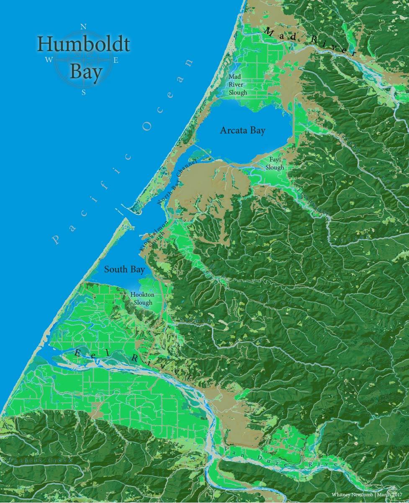
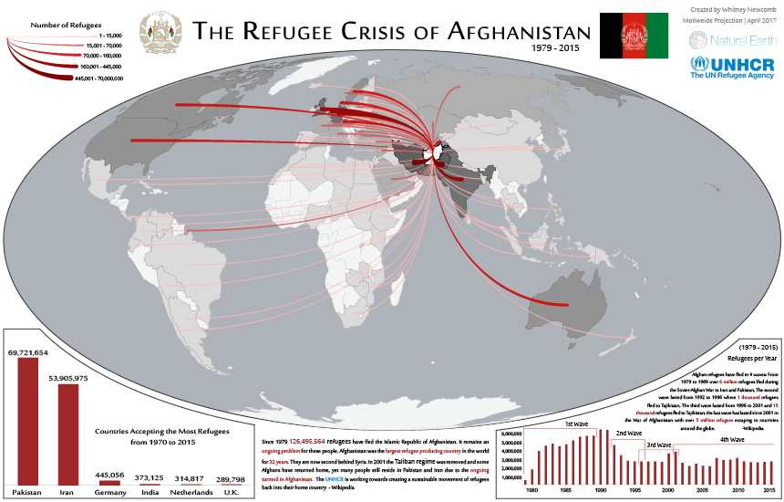

Whitney Newcomb's Cartograpy Portfolio
Hello! My name is Whitney Newcomb and this is a portfolio for my cartography work! Welcome! This site has examples of my
map design work in both ArcGIS, Adobe Illustrator, and on the web.
If a picture is worth a thousand words then a map is
worth a thousand thousand words.
Maps finished in Adobe Illustrator
Fatal Natural Gas
This map shows the natural gas leaks that caused fatalities.
Incidents with the most fatalities are showcased with caption bubbles stating the number of fatalities, number of injured, date, and location.
The data of this map ranges from 2010 to 2016.
Natural gas pipelines smear across the nation.
Download Image
Poor Americans and the Affordable Care Act
The Affordable Care Act, also known as Obama Care,
gave many Americans a cheap way to get health care.
This map shows each county within the continuous U.S. with associated poverty levels and insurance gain from 2013 - 2016.
The quotes on this map support only one side of the argument of social medicine in the U.S.
Download Image
CAFOS of the NorthWest
Confined Animal Feeding Operations in the Northwestern states showing density of cafos and the amount of
Nitrogen and Phosphorus pollution in kilograms per year. The map also shows urban areas, rivers, and lakes.
Download Image

Humboldt Bay
Humboldt Bay is located in Northwestern California. Land Cover Map.
Download Image

The Afghanistan Regugee Crisis
Afghanistan has had more refugees than any other country since the 1970's and they have traveled all
over the world for safety.
Download Image
Maps finished in ESRI's ArcMap
Lab 5

Arcata Marsh Mural
Describe some aspects of the map here. Download Image
Web Maps
Balmey Alley Murals Map
The Many Beautiful Murals of Balmey Alley - Mission District, San Franscisco California
This interacive map may not display in Internet Explorer.

{kind=link}
{kind=link}
{kind=link}
{kind=link}
{kind=link}